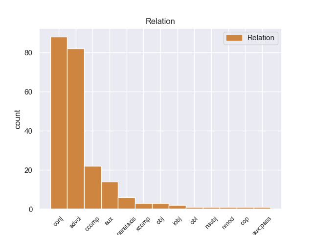
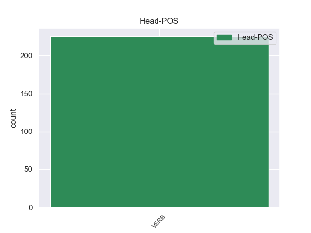
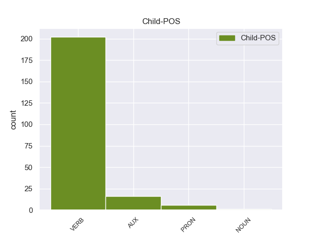

Distribution of features within this leaf



Agreement Rules sorted by frequency.
- When the dependent token is the conjunct(conj) of the head token,
1 Walang walang VERB _ Mood=Ind|Number=Sing|Person=3|Tense=Pres|VerbForm=Fin|Voice=Act 0 _ _ _
2 sinuman _ _ _ _ 0 _ _ _
3 ang _ _ _ _ 0 _ _ _
4 maaaring _ _ _ _ 0 _ _ _
5 makipagtalik _ _ _ _ 0 _ _ _
6 sa _ _ _ _ 0 _ _ _
7 hindi _ _ _ _ 0 _ _ _
8 niya _ _ _ _ 0 _ _ _
9 asawa _ _ _ _ 0 _ _ _
10 at _ _ _ _ 0 _ _ _
11 wala wala VERB _ Aspect=Imp|Mood=Ind|Number=Sing|Person=3|Tense=Pres|VerbForm=Fin|Voice=Act 1 conj _ _
12 rin _ _ _ _ 0 _ _ _
13 maaring _ _ _ _ 0 _ _ _
14 magsagawa _ _ _ _ 0 _ _ _
15 ng _ _ _ _ 0 _ _ _
16 seks _ _ _ _ 0 _ _ _
17 sa _ _ _ _ 0 _ _ _
18 paraang _ _ _ _ 0 _ _ _
19 pagsalsal _ _ _ _ 0 _ _ _
20 . _ _ _ _ 0 _ _ _
1 Walang _ _ _ _ 0 _ _ _
2 nagawa _ _ _ _ 0 _ _ _
3 si _ _ _ _ 0 _ _ _
4 Cynthia _ _ _ _ 0 _ _ _
5 , _ _ _ _ 0 _ _ _
6 nagpakasal _ _ _ _ 0 _ _ _
7 sila _ _ _ _ 0 _ _ _
8 ni _ _ _ _ 0 _ _ _
9 Edwin _ _ _ _ 0 _ _ _
10 at _ _ _ _ 0 _ _ _
11 tumira tumira VERB _ Aspect=Perf|Mood=Ind|Number=Sing|Person=1|Tense=Pres|VerbForm=Fin|Voice=Act 0 _ _ _
12 sa _ _ _ _ 0 _ _ _
13 bahay _ _ _ _ 0 _ _ _
14 nito _ _ _ _ 0 _ _ _
15 kung _ _ _ _ 0 _ _ _
16 saan _ _ _ _ 0 _ _ _
17 napalapit napalapit VERB _ Aspect=Perf|Mood=Ind|Number=Sing|Person=3|Tense=Past|VerbForm=Fin|Voice=Act 11 advcl _ _
18 ang _ _ _ _ 0 _ _ _
19 loob _ _ _ _ 0 _ _ _
20 ni _ _ _ _ 0 _ _ _
21 Cynthia _ _ _ _ 0 _ _ _
22 kay _ _ _ _ 0 _ _ _
23 Edwin _ _ _ _ 0 _ _ _
24 at _ _ _ _ 0 _ _ _
25 sa _ _ _ _ 0 _ _ _
26 ina _ _ _ _ 0 _ _ _
27 nito _ _ _ _ 0 _ _ _
28 . _ _ _ _ 0 _ _ _
1 Sinasabi sinasabi VERB _ Mood=Ind|Tense=Past 0 _ _ _
2 rin _ _ _ _ 0 _ _ _
3 daw _ _ _ _ 0 _ _ _
4 na _ _ _ _ 0 _ _ _
5 may may VERB _ Mood=Ind|Tense=Pres 1 ccomp _ _
6 ilang _ _ _ _ 0 _ _ _
7 tribo _ _ _ _ 0 _ _ _
8 pa _ _ _ _ 0 _ _ _
9 sa _ _ _ _ 0 _ _ _
10 timog _ _ _ _ 0 _ _ _
11 Taiwan _ _ _ _ 0 _ _ _
12 malapit _ _ _ _ 0 _ _ _
13 sa _ _ _ _ 0 _ _ _
14 lugar _ _ _ _ 0 _ _ _
15 ng _ _ _ _ 0 _ _ _
16 Banking _ _ _ _ 0 _ _ _
17 na _ _ _ _ 0 _ _ _
18 ginagamit _ _ _ _ 0 _ _ _
19 ang _ _ _ _ 0 _ _ _
20 Ivatan _ _ _ _ 0 _ _ _
21 bilang _ _ _ _ 0 _ _ _
22 wika _ _ _ _ 0 _ _ _
23 . _ _ _ _ 0 _ _ _
1 Siya _ _ _ _ 0 _ _ _
2 ay ay AUX _ Aspect=Imp|Mood=Ind|Number=Sing|Person=3|Tense=Pres|VerbForm=Fin|Voice=Act 3 aux _ _
3 nagpasa nagpasa VERB _ Aspect=Perf|Mood=Ind|Number=Sing|Person=1|Tense=Pres|VerbForm=Fin|Voice=Act 0 _ _ _
4 ng _ _ _ _ 0 _ _ _
5 higit _ _ _ _ 0 _ _ _
6 sa _ _ _ _ 0 _ _ _
7 6,000 _ _ _ _ 0 _ _ _
8 yards _ _ _ _ 0 _ _ _
9 at _ _ _ _ 0 _ _ _
10 60 _ _ _ _ 0 _ _ _
11 touchdowns _ _ _ _ 0 _ _ _
12 sa _ _ _ _ 0 _ _ _
13 loob _ _ _ _ 0 _ _ _
14 ng _ _ _ _ 0 _ _ _
15 kanyang _ _ _ _ 0 _ _ _
16 paglalaro _ _ _ _ 0 _ _ _
17 . _ _ _ _ 0 _ _ _
1 Sa _ _ _ _ 0 _ _ _
2 mga _ _ _ _ 0 _ _ _
3 unang _ _ _ _ 0 _ _ _
4 kabanata _ _ _ _ 0 _ _ _
5 ng _ _ _ _ 0 _ _ _
6 manga _ _ _ _ 0 _ _ _
7 , _ _ _ _ 0 _ _ _
8 binabalak binabalak VERB _ Aspect=Imp|Mood=Ind|Number=Sing|Person=3|Tense=Past|VerbForm=Fin|Voice=Act 0 _ _ _
9 ni _ _ _ _ 0 _ _ _
10 Oga _ _ _ _ 0 _ _ _
11 na _ _ _ _ 0 _ _ _
12 ibigay _ _ _ _ 0 _ _ _
13 si _ _ _ _ 0 _ _ _
14 Baby _ _ _ _ 0 _ _ _
15 Beel _ _ _ _ 0 _ _ _
16 sa _ _ _ _ 0 _ _ _
17 ibang _ _ _ _ 0 _ _ _
18 estudyante _ _ _ _ 0 _ _ _
19 sa _ _ _ _ 0 _ _ _
20 Ishiyama _ _ _ _ 0 _ _ _
21 ( _ _ _ _ 0 _ _ _
22 ang _ _ _ _ 0 _ _ _
23 teorya _ _ _ _ 0 _ _ _
24 ay ay VERB _ Aspect=Imp|Mood=Ind|Number=Sing|Person=3|Tense=Pres|VerbForm=Fin|Voice=Act 8 parataxis _ _
25 kapag _ _ _ _ 0 _ _ _
26 nakahanap _ _ _ _ 0 _ _ _
27 siya _ _ _ _ 0 _ _ _
28 ng _ _ _ _ 0 _ _ _
29 taong _ _ _ _ 0 _ _ _
30 mas _ _ _ _ 0 _ _ _
31 masama _ _ _ _ 0 _ _ _
32 at _ _ _ _ 0 _ _ _
33 mas _ _ _ _ 0 _ _ _
34 malakas _ _ _ _ 0 _ _ _
35 sa _ _ _ _ 0 _ _ _
36 kaniya _ _ _ _ 0 _ _ _
37 , _ _ _ _ 0 _ _ _
38 iiwanan _ _ _ _ 0 _ _ _
39 ni _ _ _ _ 0 _ _ _
40 Baby _ _ _ _ 0 _ _ _
41 Beel _ _ _ _ 0 _ _ _
42 si _ _ _ _ 0 _ _ _
43 Oga _ _ _ _ 0 _ _ _
44 para _ _ _ _ 0 _ _ _
45 sa _ _ _ _ 0 _ _ _
46 taong _ _ _ _ 0 _ _ _
47 ito _ _ _ _ 0 _ _ _
48 ) _ _ _ _ 0 _ _ _
49 . _ _ _ _ 0 _ _ _
1 Siya _ _ _ _ 0 _ _ _
2 ay ay VERB _ Mood=Ind|Number=Sing|Person=3|Tense=Pres|VerbForm=Fin 0 _ _ _
3 , _ _ _ _ 0 _ _ _
4 gayunpaman _ _ _ _ 0 _ _ _
5 , _ _ _ _ 0 _ _ _
6 na _ _ _ _ 0 _ _ _
7 ipinakita ipinakita VERB _ Aspect=Perf|Mood=Ind|Number=Sing|Person=3|VerbForm=Fin|Voice=Pass 2 xcomp _ _
8 upang _ _ _ _ 0 _ _ _
9 hindi _ _ _ _ 0 _ _ _
10 maging _ _ _ _ 0 _ _ _
11 sa _ _ _ _ 0 _ _ _
12 itaas _ _ _ _ 0 _ _ _
13 pagmamanipula _ _ _ _ 0 _ _ _
14 ng _ _ _ _ 0 _ _ _
15 kanyang _ _ _ _ 0 _ _ _
16 pamilya _ _ _ _ 0 _ _ _
17 upang _ _ _ _ 0 _ _ _
18 makakuha _ _ _ _ 0 _ _ _
19 ng _ _ _ _ 0 _ _ _
20 kung _ _ _ _ 0 _ _ _
21 ano _ _ _ _ 0 _ _ _
22 ang _ _ _ _ 0 _ _ _
23 kanyang _ _ _ _ 0 _ _ _
24 nais _ _ _ _ 0 _ _ _
25 . _ _ _ _ 0 _ _ _
1 Sinulat sinulat VERB _ Mood=Ind|Tense=Pres 0 _ _ _
2 niya niya PRON _ Connegative=Yes|Mood=Ind|Number=Sing|Tense=Past|VerbForm=Fin|Voice=Act 1 obj _ _
3 noong _ _ _ _ 0 _ _ _
4 1909 _ _ _ _ 0 _ _ _
5 ang _ _ _ _ 0 _ _ _
6 Wooden _ _ _ _ 0 _ _ _
7 Horse _ _ _ _ 0 _ _ _
8 , _ _ _ _ 0 _ _ _
9 ang _ _ _ _ 0 _ _ _
10 kanyang _ _ _ _ 0 _ _ _
11 unang _ _ _ _ 0 _ _ _
12 nobela _ _ _ _ 0 _ _ _
13 . _ _ _ _ 0 _ _ _
1 Ipinagpatuloy ipinagpatuloy VERB _ Mood=Ind|Tense=Past 0 _ _ _
2 niya niya PRON _ Connegative=Yes|Mood=Ind|Number=Sing|Tense=Past|VerbForm=Fin|Voice=Act 1 iobj _ _
3 ang _ _ _ _ 0 _ _ _
4 kanyang _ _ _ _ 0 _ _ _
5 pag _ _ _ _ 0 _ _ _
6 - _ _ _ _ 0 _ _ _
7 aaral _ _ _ _ 0 _ _ _
8 noong _ _ _ _ 0 _ _ _
9 1878 _ _ _ _ 0 _ _ _
10 . _ _ _ _ 0 _ _ _
1 Nakakalasaon nakakalasaon VERB _ Mood=Ind|Person=1|Tense=Imp|VerbForm=Fin 0 _ _ _
2 ang ang AUX _ Mood=Ind|Tense=Pres|VerbForm=Fin 1 cop _ _
3 bromina _ _ _ _ 0 _ _ _
4 at _ _ _ _ 0 _ _ _
5 nakakaagnas _ _ _ _ 0 _ _ _
6 ng _ _ _ _ 0 _ _ _
7 balat _ _ _ _ 0 _ _ _
8 , _ _ _ _ 0 _ _ _
9 habang _ _ _ _ 0 _ _ _
10 mas _ _ _ _ 0 _ _ _
11 hindi _ _ _ _ 0 _ _ _
12 nakakapinsala _ _ _ _ 0 _ _ _
13 ang _ _ _ _ 0 _ _ _
14 bromida _ _ _ _ 0 _ _ _
15 . _ _ _ _ 0 _ _ _
1 Pagbebenta pagbebenta VERB _ Aspect=Perf|Mood=Ind|Number=Sing|Person=3|VerbForm=Fin|Voice=Pass 0 _ _ _
2 ay ay AUX _ Aspect=Imp|Mood=Ind|Number=Sing|Person=3|Tense=Pres|VerbForm=Fin|Voice=Act 1 aux:pass _ _
3 bantog _ _ _ _ 0 _ _ _
4 sa _ _ _ _ 0 _ _ _
5 pamamagitan _ _ _ _ 0 _ _ _
6 ng _ _ _ _ 0 _ _ _
7 isang _ _ _ _ 0 _ _ _
8 kapistahan _ _ _ _ 0 _ _ _
9 ng _ _ _ _ 0 _ _ _
10 pagkakaibigan _ _ _ _ 0 _ _ _
11 sa _ _ _ _ 0 _ _ _
12 pagitan _ _ _ _ 0 _ _ _
13 ng _ _ _ _ 0 _ _ _
14 mga _ _ _ _ 0 _ _ _
15 bagong _ _ _ _ 0 _ _ _
16 dating _ _ _ _ 0 _ _ _
17 at _ _ _ _ 0 _ _ _
18 ang _ _ _ _ 0 _ _ _
19 natives _ _ _ _ 0 _ _ _
20 , _ _ _ _ 0 _ _ _
21 sumusunod _ _ _ _ 0 _ _ _
22 na _ _ _ _ 0 _ _ _
23 sa _ _ _ _ 0 _ _ _
24 huli _ _ _ _ 0 _ _ _
25 pormal _ _ _ _ 0 _ _ _
26 na _ _ _ _ 0 _ _ _
27 naka _ _ _ _ 0 _ _ _
28 ibabaw _ _ _ _ 0 _ _ _
29 pagkakaroon _ _ _ _ 0 _ _ _
30 ng _ _ _ _ 0 _ _ _
31 pag _ _ _ _ 0 _ _ _
32 - _ _ _ _ 0 _ _ _
33 areglo _ _ _ _ 0 _ _ _
34 . _ _ _ _ 0 _ _ _
1 Samantala _ _ _ _ 0 _ _ _
2 sa _ _ _ _ 0 _ _ _
3 free _ _ _ _ 0 _ _ _
4 agency _ _ _ _ 0 _ _ _
5 , _ _ _ _ 0 _ _ _
6 nitong _ _ _ _ 0 _ _ _
7 13 _ _ _ _ 0 _ _ _
8 Hulyo _ _ _ _ 0 _ _ _
9 2006 _ _ _ _ 0 _ _ _
10 , _ _ _ _ 0 _ _ _
11 ang _ _ _ _ 0 _ _ _
12 Clippers _ _ _ _ 0 _ _ _
13 ay _ _ _ _ 0 _ _ _
14 nagtagumpay nagtagumpay VERB _ Aspect=Perf|Evident=Nfh|Mood=Ind|Number=Sing|Person=3|Polarity=Pos|Tense=Past 0 _ _ _
15 , _ _ _ _ 0 _ _ _
16 sa _ _ _ _ 0 _ _ _
17 pagpili pagpili NOUN _ Aspect=Perf|Mood=Ind|Number=Sing|Person=3|Tense=Past|VerbForm=Fin|Voice=Act 14 obl _ _
18 nila _ _ _ _ 0 _ _ _
19 sa _ _ _ _ 0 _ _ _
20 isang _ _ _ _ 0 _ _ _
21 forward _ _ _ _ 0 _ _ _
22 na _ _ _ _ 0 _ _ _
23 si _ _ _ _ 0 _ _ _
24 Tim _ _ _ _ 0 _ _ _
25 Thomas _ _ _ _ 0 _ _ _
26 na _ _ _ _ 0 _ _ _
27 taga _ _ _ _ 0 _ _ _
28 Phoenix _ _ _ _ 0 _ _ _
29 , _ _ _ _ 0 _ _ _
30 para _ _ _ _ 0 _ _ _
31 sa _ _ _ _ 0 _ _ _
32 isang _ _ _ _ 0 _ _ _
33 4 _ _ _ _ 0 _ _ _
34 na _ _ _ _ 0 _ _ _
35 taon _ _ _ _ 0 _ _ _
36 , _ _ _ _ 0 _ _ _
37 $ _ _ _ _ 0 _ _ _
38 24 _ _ _ _ 0 _ _ _
39 million _ _ _ _ 0 _ _ _
40 na _ _ _ _ 0 _ _ _
41 kontrata _ _ _ _ 0 _ _ _
42 . _ _ _ _ 0 _ _ _
Disagree Examples:
1 At _ _ _ _ 0 _ _ _
2 noong _ _ _ _ 0 _ _ _
3 2015 _ _ _ _ 0 _ _ _
4 , _ _ _ _ 0 _ _ _
5 idineklara idineklara VERB _ Aspect=Perf|Mood=Ind|Number=Sing|Person=3|Tense=Past|VerbForm=Fin|Voice=Pass 0 _ _ _
6 ni _ _ _ _ 0 _ _ _
7 Pacquiao _ _ _ _ 0 _ _ _
8 na _ _ _ _ 0 _ _ _
9 tumakbo tumakbo VERB _ Mood=Sub|Number=Plur|Person=1|Tense=Pres|VerbForm=Fin 5 ccomp _ _
10 bilang _ _ _ _ 0 _ _ _
11 Senador _ _ _ _ 0 _ _ _
12 sa _ _ _ _ 0 _ _ _
13 ilalim _ _ _ _ 0 _ _ _
14 ng _ _ _ _ 0 _ _ _
15 United _ _ _ _ 0 _ _ _
16 Nationalist _ _ _ _ 0 _ _ _
17 Alliance _ _ _ _ 0 _ _ _
18 ( _ _ _ _ 0 _ _ _
19 UNA _ _ _ _ 0 _ _ _
20 ) _ _ _ _ 0 _ _ _
21 sa _ _ _ _ 0 _ _ _
22 pamumuno _ _ _ _ 0 _ _ _
23 ni _ _ _ _ 0 _ _ _
24 Binay _ _ _ _ 0 _ _ _
25 . _ _ _ _ 0 _ _ _
1 Batay _ _ _ _ 0 _ _ _
2 sa _ _ _ _ 0 _ _ _
3 tradisyong _ _ _ _ 0 _ _ _
4 militar _ _ _ _ 0 _ _ _
5 , _ _ _ _ 0 _ _ _
6 ito _ _ _ _ 0 _ _ _
7 ay _ _ _ _ 0 _ _ _
8 ang _ _ _ _ 0 _ _ _
9 pagbaba _ _ _ _ 0 _ _ _
10 ng _ _ _ _ 0 _ _ _
11 kanyang _ _ _ _ 0 _ _ _
12 ranggo _ _ _ _ 0 _ _ _
13 mula _ _ _ _ 0 _ _ _
14 sa _ _ _ _ 0 _ _ _
15 pagiging _ _ _ _ 0 _ _ _
16 heneral _ _ _ _ 0 _ _ _
17 ng _ _ _ _ 0 _ _ _
18 artilyeriya _ _ _ _ 0 _ _ _
19 , _ _ _ _ 0 _ _ _
20 kaya _ _ _ _ 0 _ _ _
21 nagdahilan _ _ _ _ 0 _ _ _
22 siya _ _ _ _ 0 _ _ _
23 na _ _ _ _ 0 _ _ _
24 mayroon mayroon VERB _ Mood=Sub|Number=Plur|Person=1|Tense=Pres|VerbForm=Fin 0 _ _ _
25 siyang _ _ _ _ 0 _ _ _
26 sakit _ _ _ _ 0 _ _ _
27 upang _ _ _ _ 0 _ _ _
28 hindi _ _ _ _ 0 _ _ _
29 mapadala mapadala VERB _ Aspect=Perf|Mood=Ind|Number=Sing|Person=3|Tense=Pres|VerbForm=Fin|Voice=Act 24 advcl _ _
30 sa _ _ _ _ 0 _ _ _
31 rehiyon _ _ _ _ 0 _ _ _
32 . _ _ _ _ 0 _ _ _
1 Doon do VERB _ Aspect=Perf|Mood=Imp|Number=Plur|Person=2|Polarity=Pos|Tense=Pres 0 _ _ _
2 siya _ _ _ _ 0 _ _ _
3 ipinangalan ipinan VERB _ Aspect=Perf|Mood=Ind|Polarity=Neg|Tense=Pres|VerbForm=Conv 1 nmod _ _
4 . _ _ _ _ 0 _ _ _
1 Hinati hinati VERB _ Aspect=Perf|Mood=Imp|Number=Plur|Person=2|VerbForm=Fin|Voice=Act 0 _ _ _
2 - _ _ _ _ 0 _ _ _
3 hati _ _ _ _ 0 _ _ _
4 ang _ _ _ _ 0 _ _ _
5 bansa _ _ _ _ 0 _ _ _
6 sa _ _ _ _ 0 _ _ _
7 mga _ _ _ _ 0 _ _ _
8 lalawigan _ _ _ _ 0 _ _ _
9 at _ _ _ _ 0 _ _ _
10 pinamunuan pinamunuan VERB _ Aspect=Perf|Mood=Ind|Number=Plur|Person=3|VerbForm=Fin|Voice=Pass 1 conj _ _
11 ito _ _ _ _ 0 _ _ _
12 ng _ _ _ _ 0 _ _ _
13 mga _ _ _ _ 0 _ _ _
14 gubernador _ _ _ _ 0 _ _ _
15 na _ _ _ _ 0 _ _ _
16 itinatalaga _ _ _ _ 0 _ _ _
17 ng _ _ _ _ 0 _ _ _
18 korte _ _ _ _ 0 _ _ _
19 . _ _ _ _ 0 _ _ _
1 Hindi _ _ _ _ 0 _ _ _
2 nagkasatuparan nagkasatuparan VERB _ Aspect=Prog|Mood=Ind|Number[abs]=Sing|Person[abs]=1 3 advcl _ _
3 ang egn VERB _ Mood=Imp|Number=Sing|Person=2|VerbForm=Fin 0 _ _ _
4 utos _ _ _ _ 0 _ _ _
5 . _ _ _ _ 0 _ _ _